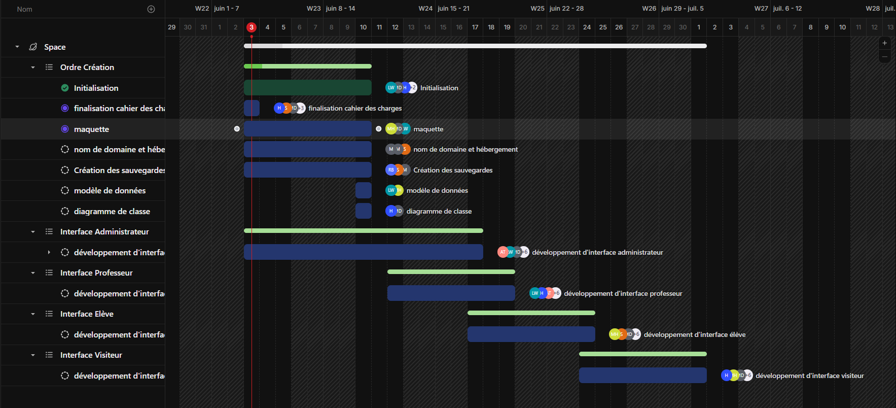

Projet Web — 2026
Iris Space
Une plateforme conçue pour centraliser la gestion de la vie scolaire, faciliter la communication et optimiser l’organisation pédagogique.
const stack = ["HTML", "TailwindCSS", "daisyUI", "PHP", "Docker", "Nginx",];
const role = "Chef de projet";
const duree = "8 mois";
const contexte = "Projet scolaire";
Le projet
Ce projet a été initié afin de répondre aux besoins de gestion et de communication au sein d’un établissement scolaire. Actuellement, les informations sont souvent dispersées entre plusieurs outils, ce qui complique le suivi des élèves, la diffusion des informations et l’organisation pédagogique. L’objectif est de développer une plateforme centralisée permettant de regrouper la vie scolaire, les échanges et les ressources pédagogiques au sein d’une interface claire, accessible et adaptée aux différents utilisateurs.
Ce que j'ai réalisé
- → Réalisation d'un cahier des charges
- → Conception d’un diagramme de Gantt pour organiser les tâches et assurer le suivi des équipes.
- → Contribution à la définition des maquettes et à la structuration des interfaces utilisateurs.
- → Contribution au développement et à l’amélioration continue du front-end.
Aperçu du projet
